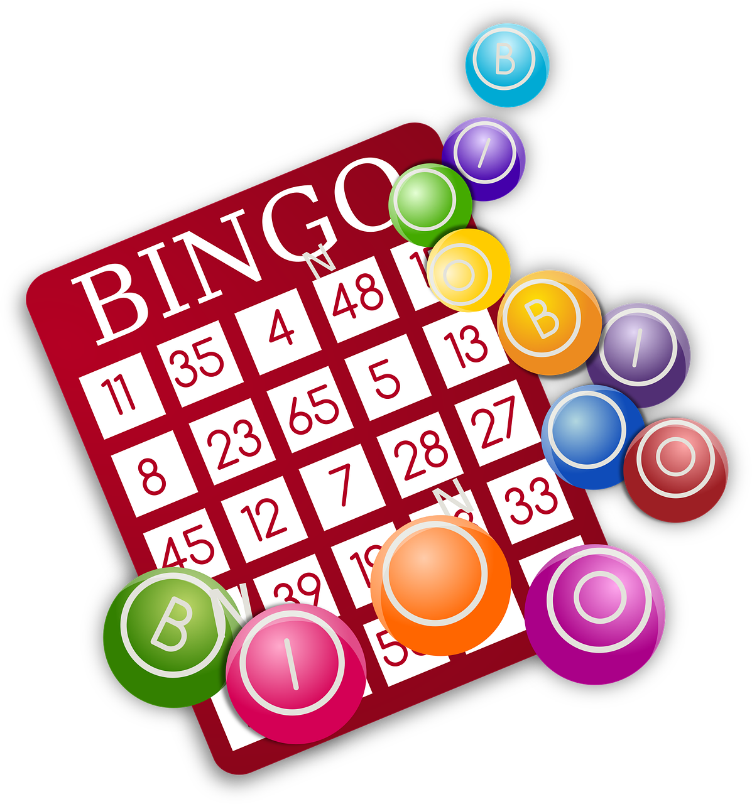

Guía de Uso: Bingo Matemático
Bienvenido al Bingo Matemático. Esta aplicación permite realizar sorteos automáticos basados en definiciones matemáticas complejas, renderizadas con precisión científica.
1. Preparación del Juego
1
Descargar Cartones: Haz clic en el icono

junto al título para abrir o descargar los cartones en PDF para los alumnos.2
Configurar Tiempo: En el menú desplegable "Intervalo", selecciona cuántos segundos quieres que pasen entre una definición y otra (por defecto 20 segundos).
2. Controles del Sorteo
| Icono | Botón | Acción |
|---|---|---|
| Cartones | Descarga un pdf con diferentes cartones de bingo. | |
| Play (Reproducir) | Inicia el sorteo. Aparecerá una definición matemática aleatoria en la pantalla central. | |
| Pause (Pausa) | Detiene el avance automático si los alumnos necesitan más tiempo para resolver la definición. | |
| Reset (Reiniciar) | Limpia el historial, restablece todos los números del 1 al 100 y detiene el juego. | |
 |
Comprobar | Comprobar si los números introducidos en el cuadro de texto han salido en el sorteo. |
3. Durante la Partida
- Panel de Definiciones: Aquí verás la fórmula o el acertijo matemático. El sistema utiliza MathJax para que todas las potencias, raíces y símbolos se vean perfectamente.
- Historial: En la barra lateral izquierda se irán acumulando las definiciones que ya han salido. Esto sirve para repasar en caso de duda.
4. Comprobación de Ganadores
Cuando un alumno cante "¡Línea!" o "¡Bingo!", no necesitas buscar en el historial manualmente:
1
Pulsa el botón de pausa  .
.
2
Escribe los números del cartón del alumno en el cuadro de texto inferior, separados por comas (ejemplo: .
5, 12, 45) y pulsa el botón de Comprobar .3
El sistema te dirá automáticamente si todos esos números ya han salido o si hay alguno que todavía no ha sido sorteado. Pulsa el boton de play para continuar si se ha cantado "¡Línea!" o algún número era incorrecto.
4
Si se ha cantado "¡Bingo!" y todos los números eran correcto el juego ha Terminado. Puedes pulsar el botón de reiniciar  para jugar una partida nueva.
para jugar una partida nueva.
5
En caso de empate se puede lanzar una moneda o hacer una competición entre los ganadores a la Petanca Matemática o las operaciones de números naturales.